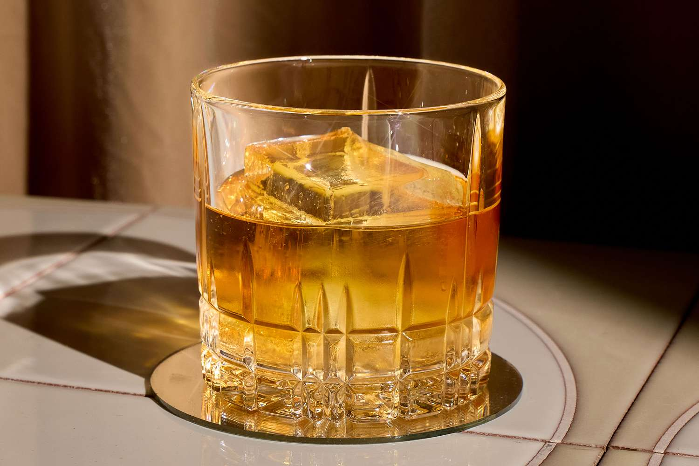

Monte Carlo

Ingredients
- 2 oz rye whiskey
- 1/2 oz Bénédictine
- 2 dashes Angostura bitters
Instructions
- Add all ingredients to a mixing glass with ice.
- Stir until well chilled.
- Strain into a rocks glass over fresh ice.
- Garnish with an lemon peel.
← Back to Menu